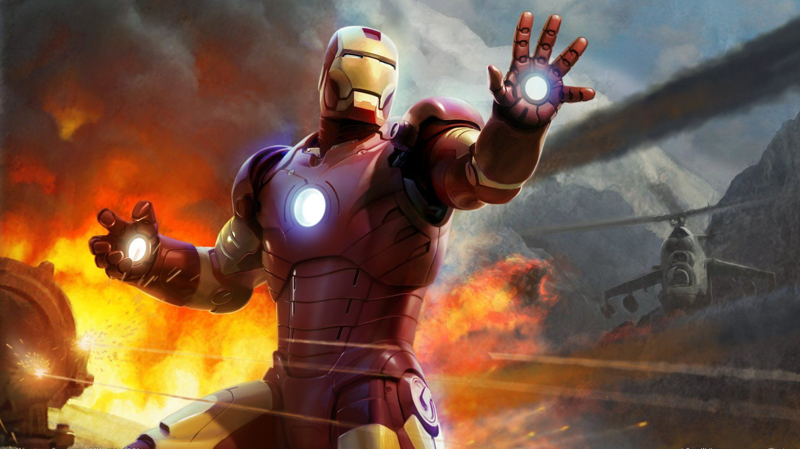

Iron Man possesses powered armor that gives him superhuman strength and durability, flight, and an array of weapons. The armor is invented and worn by Stark.The weapons systems of the suit have changed over the years, but Iron Man's standard offensive weapons have always been the repulsor rays that are fired from the palms of his gauntlets. In addition to the general-purpose model he wears, Stark has developed several specialized suits for space travel, deep-sea diving, stealth, and other special purposes. Stark has modified suits, like the Hulkbuster heavy armor. The Hulkbuster armor is composed of add-ons to his so-called modular armor, designed to enhance its strength and durability enough to engage the Incredible Hulk in a fight
